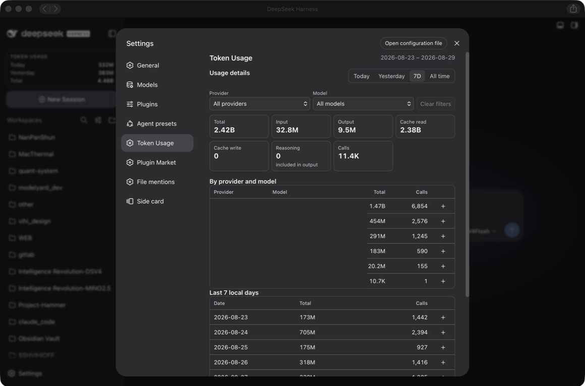

Automatic history discovery
Finds available plugin-owned token records in DSH storage without asking you to maintain a path or duplicate configuration.
Community plugin for DeepSeek Harness
A persistent, local-first Token Usage sidebar and settings page for the DeepSeek Harness web profile. Discover available history automatically, keep provider and model names accurate, and make every total easy to inspect.

Designed for useful history
The plugin follows DSH/provider-reported usage records and presents the result in a compact, native-looking interface.
Finds available plugin-owned token records in DSH storage without asking you to maintain a path or duplicate configuration.
Range tabs, filters, metrics, provider/model rows, and recent local days stay readable in a smaller settings surface.
A plugin-owned SQLite ledger with WAL mode keeps persistent accounting fast and survives DSH restarts and upgrades.
Canonical invocation identities and replay-safe updates prevent retries and duplicate events from inflating totals.
Filters use the exact provider and model names reported by DSH. There is no second provider-name form to fill in.
Usage metadata remains on your machine. The ledger does not store prompts, assistant text, tool output, credentials, or API keys.
How it works
The plugin uses authoritative runtime usage when available, preserves raw labels, and reports the limits of recoverable history honestly.
Read committed DSH/provider usage records from live events and available local history.
Use the canonical session, turn, and step identity so replays are counted once.
Store accounting metadata in the plugin-owned local SQLite ledger.
Show totals, buckets, filters, provider/model detail, and recent local calendar days.
Get started
Install the scoped npm package through the DSH plugin command, then restart the web profile once so the loader can activate it.
dsh plugin --profile web add @y2zyyr/dsh-token-usage-sidebar
# Restart dsh web after installation.Good to know
No. The accounting ledger is stored separately under the DSH data home and is not removed by uninstalling the plugin.
No. It uses provider/runtime-reported usage records. Reasoning is shown as an output subdivision and is not added to the total twice.
No. Automatic discovery is intentionally narrow: it looks for recognized plugin-owned records in the relevant DSH storage area.
No. It is an independent community plugin for DeepSeek Harness.